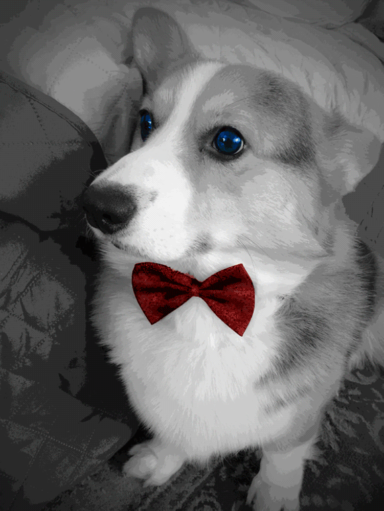

Twinkle in His Eye

I wanted to test out creating a simple GIF animation using Photoshop's keyframe features.
Since GIFs have limited color ranges, I kept that in mind and decided to work in a limited color pallete.
The image of the dog was originally very colorfully but I purposefully converted most of it to black and white.
Only important details, like the dog's eyes and bowtie kept their color.
This helped to make them stand out against the lack of color elsewhere.
I used to have a corgi of my own who unfortunately passed away. So I thought about playing around with ideas of the afterlife, of becoming starlight and stardust. While the image of the corgi here is not of my own and actually found from the internet, you can still sort of interpret a supernatural quality to this dog. The main way I wanted that to be shown is with the unnaturally dark blue eyes that shimmer. Of course, I didn't want it to be too creepy so I tried making it more light-hearted with the wink and the stars that shoot out.